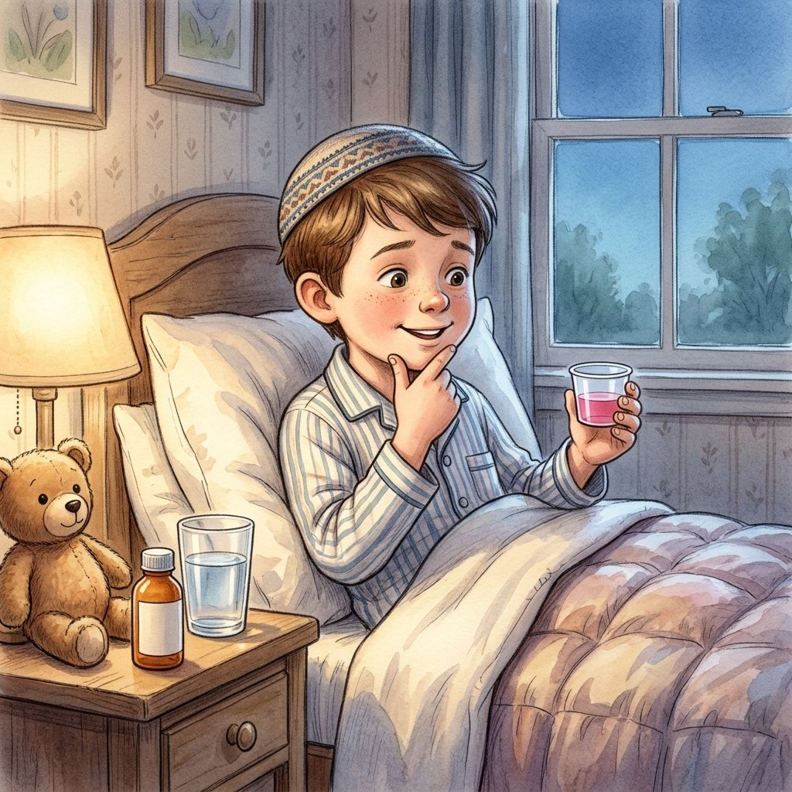

יש לי מושג
מה מברכים על תרופות?
על הפרק: ידעני חולה, והרב בא לבקר אותו. מברכים על תרופה? ועל המים ששותים כדי לבלוע אותה? ומה עושים כשנזכרים באמצע העוגייה ששכחנו לברך?
0:00
--:--
לא הצלחנו לטעון את ההקלטה. בדקו את החיבור לאינטרנט ונסו שוב.